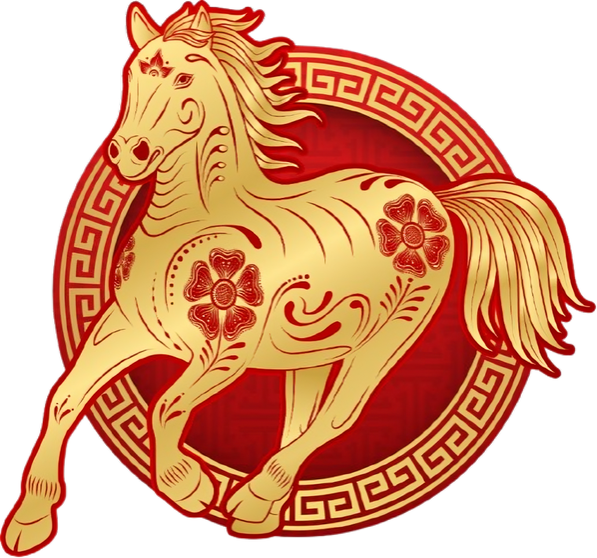

Welcome the Year of the Horse

Ganti src="YOUR_HORSE_IMAGE.png"
dengan nama file gambar kamu
Chinese New Year, also known as the Lunar New Year or Spring Festival, is the most important and widely celebrated holiday in Chinese culture. It marks the start of a new year on the traditional lunisolar calendar and is observed by billions of people across China and around the world.
Celebrations typically span 15 days, beginning on the first day of the lunar calendar and culminating with the spectacular Lantern Festival. Families come together to honor ancestors, welcome prosperity, and usher in fresh beginnings with joy and reverence.
The Horse is the seventh sign of the Chinese zodiac, embodying a spirit that cannot be contained. 2026 is a year to gallop forward with courage and conviction.
The Horse radiates vibrant, tireless energy — inspiring those around it to move, create, and thrive without hesitation.
Steadfast and powerful, the Horse carries burdens with grace and faces challenges with unwavering resilience.
Wild at heart, the Horse yearns for open horizons — a symbol of independence, adventure, and boundless spirit.
Once set on a goal, the Horse pursues it relentlessly — a force of nature driven by passion and purpose.
These beloved customs have been passed down for generations, each carrying deep meaning and a wish for good fortune.
紅包 Hóngbāo
Elders and married couples gift red envelopes filled with money to children and unmarried family members — a cherished symbol of luck, love, and prosperity passed hand to hand.
舞龍舞獅 Wǔlóng Wǔshī
Colorful dragon and lion performances fill the streets with drumbeats and rhythm. These ancient dances are believed to drive away evil spirits and summon prosperity for the new year.
烟花爆竹 Yānhuā Bàozhú
The thunderous crack of firecrackers and the brilliant burst of fireworks light up the midnight sky — a centuries-old way to frighten away evil and ring in the new year with a bang.
紅燈籠 Hóng Dēnglóng
Homes, streets, and temples glow with thousands of red lanterns. Each one represents warmth, happiness, and the hope that the coming year will be bright and prosperous.
Every dish on the New Year table tells a story. These foods are chosen not only for their taste, but for the blessings they represent.
Shaped like ancient gold ingots, dumplings are a symbol of wealth and good fortune. Families gather to fold and cook them together — a delicious act of unity and hope.
This sticky rice cake's name sounds like "year higher," making it a symbol of rising success, growth, and reaching new heights in the year ahead.
Golden and crispy, spring rolls resemble bars of gold. Eating them at New Year is said to bring wealth and abundance — making them a festive favorite across generations.
A whole fish, served head-to-tail, symbolizes a complete and abundant life. The word for fish sounds like "surplus" in Chinese — a perfect wish for the new year.
Chinese New Year is a time of reunion, reflection, and revelry. Here are some of the most beloved ways families and communities mark the occasion.
The eve of Lunar New Year brings families together for the most important meal of the year — a feast of auspicious dishes shared with love and laughter.
During the first days of the new year, families visit grandparents, aunts, uncles, and friends — exchanging well-wishes, gifts, and red envelopes.
Homes are adorned in red: paper cuttings, spring couplets, fresh flowers, and lanterns transform every doorstep into a celebration of life and color.
Streets come alive with dragon dances, lion performances, acrobatics, and traditional music — a spectacle of culture passed lovingly through generations.
Beyond reunion dinner, the entire festival period is marked by shared meals — dim sum breakfasts, elaborate banquets, and sweet treats for every visitor.
On the 15th night, the celebration reaches its luminous finale — thousands of glowing lanterns light up the sky, marking the end of the festive season.
May the Year of the Horse bring you prosperity, happiness, and success.
May every stride carry you further toward your dreams.